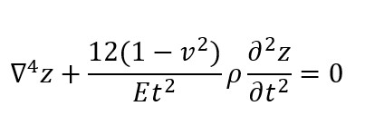
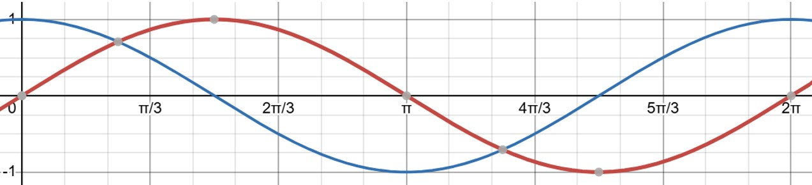
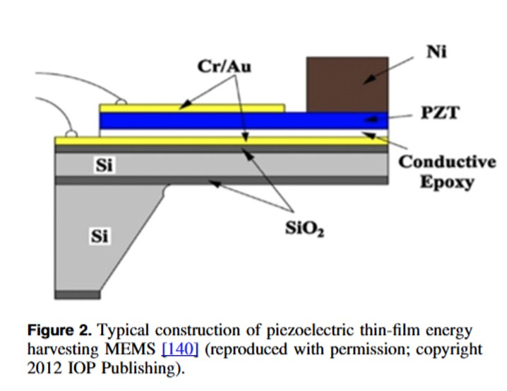
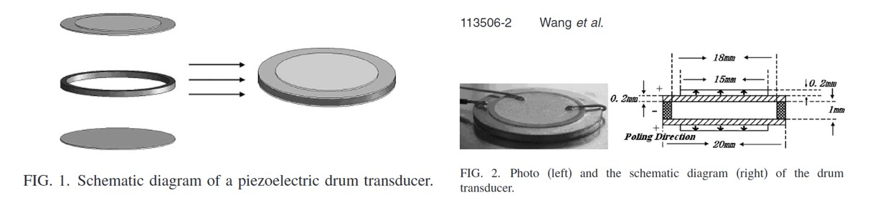

Table of contents: |
|
|---|---|
| Abstract | |
| Introduction | |
| Discussion and Analysis | |
| Conclusion | |
| References |
In this article, we will discuss the structures, features, and possibilities of piezoelectric generators. Since it is based on the transfer of mechanical to electrical energy, it could be a promising solution for a
renewable and sustainable energy source. However, this power comes with conditions which make maintenance a challenge, explaining why piezoelectric systems are not as prominent as other energy sources. To aid the
knowledge and awareness of how these devices work, this article will identify the benefits and issues of this concept – Structured to evaluate whether piezoelectric materials and their usage as electricity generators
is realistic in the future. Specifically, identifying how the piezoelectric material will be moving when it reacts to an applied sound wave, various types of material that can be used, and the devices which they are
used in to generate energy.
In 2024, Primary Oil and Natural Gas made up the majority of energy produced in the UK. (Gov.uk, 2025), and the search for renewable energy sources expands as new technologies emerge. To explore and invent new techniques, we need to be adaptive to unconventional options (Villante et. al, 2025). One recent point of research is piezoelectric materials: These are specific materials which can generate electricity when their structures are manipulated, enabling them to convert vibrations and sound waves into electrical energy. (Electrical4U, n.d) This article will examine the process of piezoelectric conversion, which materials are the most efficient, and to highlight future areas of research in this topic.
Discussion and Analysis 1. The Theory Behind Piezoelectric Motion: The basic concept and physics behind piezoelectric motion lies in stress, strain and velocity. The calculations and theories behind material stress and strain will depend on the size and shape of the structure which is being distorted, (Electrical4U, n.d). This section will cover two different piezoelectric generator designs. Earlier forms of the generator featured a disk design – using a disk to be moved by vibrations and process the electrical conversion (Wang, S., et. al). A 2007 design featuring a disk format managed to produce 18 volts of potential difference, but due to a high applied impedance, this translated to only 17µW of power. (Wang, S., et. al). As for the theory behind the vibrating piezoelectric material layer, when pressure is applied, (the wave hits) the layer will either bend upwards or downwards (Garrett, S.L., et. al). The identity below (Garrett, S.L., et. al) represents how the different factors affecting the disk interact with each other.
The following points will break down this equation: - The "∇^4 z" in this equation is called a Bi-Harmonic Oscillator, it determines how the material will behave under (2-Dimensional) stress (Garrett, S.L., et. al) - "Et^2" represents the thickness of the vibrating disk (Garrett, S.L., et. al) - v^2 is Poisson’s ratio – The measure of how much the material deforms when stress is applied(Bhuyan, S., et. al) - ρ, (also known as Rho) represents the density of the disk material (Garrett, S.L., et. al) - "(∂^2 z)⁄(∂t^2 )" is the 2nd order derivative of displacement (with regards to time), also known as the disk’s displacement - movements made overtime. (Garrett, S.L., et. al) When various mathematical workings are applied, the solution to calculate z (the vertical displacement of the disk, with respect to time, that the disk will move) will either be the trigonometric function sin(mx) or cos(mx) graphs shown below from (Desmos, n.d):
According to the graphs, the materials in the disk should move (related to the value: proportional to either Sin(mx), the red line, or Cos(mx), the blue line. (Garrett, S.L., et. al) This calculation shows how easily the waves can influence the motion of the piezoelectric material, and how this predictability makes this concept a promising option for generating reliable energy. 2. Analysis of Materials: There exists a wide variety of piezoelectric materials, and they are divisible by one main factor – they can be either ferroelectric, or non-ferroelectric materials:(Electrical4U, n.d) Ferroelectric materials can produce and maintain a permanent electric polarization (charge) which can be reversed at will (Electrical4U, n.d), useful for generating electricity. The most common ferromagnetic materials are Lead Zirconate Titanate (PZT), Piezopolymer film (PVDF) and Ferroelectric Crystals.(Khan, A., et. al) The varieties of crystals that this article will be referring to are called Perovskite and Wurtzite, (Khan, A., et. al) these crystals are artificially grown using techniques like development from high temperature solutions. (Zhang, S., et. al) Since they are artificially made, they can possess qualities such as better coupling and sensitivity, or a broader tolerance range for mechanical stress. (Zhang, S., et. al). As for the non-ferroelectric materials: including Aluminium Nitride (AIN), and Zinc Oxide (ZnO)(Khan, A., et. al) Recent experimentations with non-ferroelectric materials have also led to the use of thinner, and more delicate materials such as cellulose (materials made from plant cells). This material is called electro-active paper (EAPap), (Khan, A., et. al) and was chosen for piezoelectric conversion due to its extremely light weight and small thickness. 3. Featured Designs: In order to effectively examine the efficiency of piezoelectric materials, we need to consider how they are being used and applied to their system designs. There are two main designs featured as piezoelectric generators: The “Disk” and the “Vibrating Layer” (Wang, S., et. al) (Priya, S., et. al). As mentioned before, earlier developments of the Piezoelectric generator involved a moving disk experiencing stress from ambient waveforms (FIG 1 and 2 below). This design was changed to thinner, flatter layers placed on top of each other, the most common material used for these designs is PZT (Priya, S., et. al). (shown as ‘Figure 2’ further down): Engineers and scientists are trying to replace this material as the piezoelectric converter, since PZT is approximately 60% Lead (Priya, S., et. al). – As a toxic element used in a commercial device, this is being replaced by ferroelectric crystals, and other more reliable and sustainable materials as mentioned in Section 2.
 
Conclusion In researching this subject, there have been more facts highlighted than conclusions. Piezoelectric generators are capable of converting mechanical vibrations in the form of sound waves to electrical energy. However, this process has many caveats: Some generators can produce a decent voltage, but with a high impedance, meaning that much less power from this can be used. Another challenge which needs to be addressed for Piezoelectric Generators to become more commonly used is sourcing the appropriate materials. Research has turned to biological materials, because plant cells like cellulose are naturally-occurring, non-toxic to the environment, and provide less resistance to motion, and therefore, more energy generation. With more research and development to address these issues, it is possible to use Piezoelectric conversion as a sustainable and reliable method of energy generation.
References
Bhuyan, S. (2025). Poisson’s Ratio: Definition, Formula, and Table. [online] Science Facts. (Bhuyan, S., et. al) Poisson's Ratio: Definition, Formula, and tableDesmos (n.d.). Desmos Graphing Calculator. [online] Desmos. (Desmos, n.d) Desmos Graphing CalculatorElectrical4U (n.d.). Ferroelectric Materials | Electrical4U. [online] (Electrical4U, n.d) Ferroelectric MaterialsGarrett, S.L. (2020). Understanding acoustics : an experimentalist’s view of sound and vibration. Cham, Switzerland: Springer Nature. (Garrett, S.L., et. al) Understanding Acoustics: An Experimentalist's View of Sound and VibrationGov.uk (2025). UK ENERGY IN BRIEF 2025. [online] assets.publishing. service.gov.uk. (Gov.uk, 2025) UK ENERGY IN BRIEF 2025Khan, A., Abas, Z., Kim, H.S. and Oh, I.-K. (2016). Piezoelectric thin films: an integrated review of transducers and energy harvesting. [online] iopscience.iop.org. (Khan, A., et. al) Piezoelectric Thin Films: An Integrated Review of Transducers and Energy HarvestingOrtiz, J., Zabala, N., Monje, P.M., Cokonaj, V. and Aranguren, G. (2013). Energy generation based on piezoelectric transducers. [online] icrepq.com. (Ortiz, J., et. al) Energy Generation Based on Piezoelectric TransducersPriya, S. (2007). Advances in energy harvesting using low profile piezoelectric transducers . [online] Google Scholar. (Priya, S., et. al) Advances in Energy Harvesting Using low-Profile Piezoelectric TransducersVillante, C., Dell’Aversano, S. and Ranieri, S. (2025). Transition to Sustainable Energy Technologies. CRC Press. (Villante et. al, 2025) Transition to Sustainable Energy TechnologiesWang, S., Lam, K.H., Sun, C.L., Kwok, K.W., Wa Chan, H.L., Guo, M.S. and Zhao, X.-Z. (2007). Energy Harvesting with Piezoelectric Transducers. [online] Applied Physics Letters. (Wang, S., et. al) Energy Harvesting with Piezoelectric TransducersZhang, S., Li, F., Yu, F., Jiang, X., Lee, H.-Y., Luo, J. and Shrout, T.R. (2018). Recent Developments in Piezoelectric Crystals. Journal of the Korean Ceramic Society, [online] 55(5), pp.419–439. (Zhang, S., et. al) Recent Developments in Piezoelectric CrystalsAny references featured here but not as in-text references in this article helped add context and understanding for this piece of writing Loading last update time...